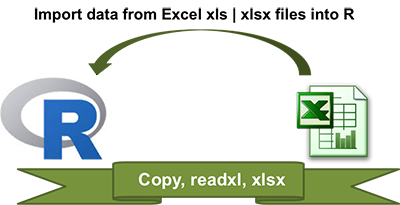
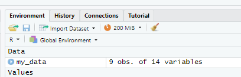
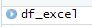

my_data <- read.table(file = "clipboard", sep = "\t", header=TRUE)6 Импорт и экспорт данных
В R можно загрузить данные практически любого формата и из любого источника.
Разберем некоторые наиболее часто встречающиеся ситуации.
6.1 Импорт и экспорт файлов Excel
Важно!: сохраните все файлы с дополнительными материалами к заданию в ту же директорию, где будете работать (лучше всего создать новый проект под это занятие). Это нужно для того, чтобы лишний раз не прописывать путь к файлу).
Еще один удобный ход - установить в настройках рабочую директорию в ту же папку, где лежит файл со скриптом:
Session - Set Working Directory - To Source File Location

Импортировать данные из файла Excel можно несколькими способами.
6.2 Способ 1. Скопировать из Excel и сохранить в R.
Для того, чтобы воспользоваться этим способом, сохраните файл, откройте его, выделите все данные и скопируйте их (Ctrl+C). Затем запустите код ниже:
Если все сделано правильно, то у Вас в рабочем окружении появится объект my_data, в котором будет 9 наблюдений и 14 переменных (это результаты реализации государственной программы содействия добровольному переселению соотечественников). Чтобы увидеть данные, нажмите на него и он откроется в просмотрщике.

6.3 Способ 2. Импорт из файла Excel.
Предположим, файл Excel у нас большой, содержит несколько листов, скопировать все и вставить - не очень удачная идея. В этом случае (честно говоря, такие случаи случаются гораздо чаще, чем описанные в способе 1), нам нужно импортировать данные из файла.
Это сделать не так сложно, к счастью, у нас есть библиотека readxl, которая как раз и предназначена для таких целей.
Порядок действий следующий:
- Загружаем библиотеку
readxl. - Запускаем функцию
read_excel(file excel, sheet = "name of sheet")
Давайте загрузим тот же файл с соотечественниками, что и в примере выше:
library(readxl)
df_excel<-read_excel("ProgResCompatriots.xlsx", sheet=1)В рабочем окружении отобразился новый объект, его содержание идентично my_data. Чтобы посмотреть - нужно нажать на голубой кружок с белым треугольником рядом с именем:

Памятка по работе с readxl: 
6.4 Экспорт результатов в Excel
Давайте попробуем создать новую переменную, куда посчитаем среднее количество перехавших за год в период с 2010 по 2021 гг.
library(dplyr)
df_excel$Среднее<-sapply(df_excel[,2:13], mean)У нас появился новый столбец в конце таблицы.
Теперь эту новую таблицу нужно сохранить в новый файл. Для этого нам понадобится библиотека xlsx, а в ней - функция write.xlxs().
Запустите следующий код:
install.packages("xlsx") #установим библиотеку
library(xlsx)
write.xlsx(df_excel, "df_excel_new.xlsx")6.5 Импорт и экспорт файла в формате CSV
CSV (от англ. Comma-Separated Values — значения, разделённые запятыми) — текстовый формат, предназначенный для представления табличных данных. Строка таблицы соответствует строке текста, которая содержит одно или несколько полей, разделенных запятыми, то есть, по сути, это данные, представленные в текстовом формате.
Статистическая информация часто хранится именно в формате CSV, этому формату уже более 40 лет. Текстовые файлы открываются читаются на любом устройстве и в любой среде без дополнительных инструментов. Из-за своих преимуществ CSV — сверхпопулярный формат обмена данными.
За импорт таких файлов отвечает библиотека readr, а в ней - функция read_csv2 (есть и просто read_csv, но там - разделитель действительно запятая, а в read_csv2 - точка с запятой). В чем проблема? Проблема в том, что в России запятая используется в качестве разделителя десятичных разрядов, и когда мы начинаем сохранять в формате csv возникает конфликт. Чтобы его не было, программа вместо запятой использует разделитель - точку с запятой. Это хорошо видно, если посмотреть, как эти данные выглядят в блокноте.
Есть и аналогичные функции базового R - read.csv()и read.csv2. Их отличие от функций read_csv2 и read_csvзаключается в быстроте последних, нюансах в обработке строковых переменных (базовые функции принудительно преобразуют их в факторные переменные, тогда как более современные read_csv2 и read_csv оставляют тип character). Есть и некоторые другие отличие, но их обсуждение выходит за рамки данного пособия.
Порядок действий:
Скачать файл в формате csv.
Отрыть файл:
library(readr)
df_csv<-read_csv2("ProgResCompatriots.csv")У нас теперь уже три файла с одинаковыми данными). Что с ними делать? Что-нибудь придумаем по ходу занятия…
Например, давайте посчитаем прирост соотечественников в 2021 году по сравнению с 2020 годом.
df_csv$change2021<-df_csv$`2021`-df_csv$`2020`Сохраним наш файл в этом же формате:
write.csv2(df_csv, "df_csv_new.csv")6.6 Импорт файла по URL
В Интернете хранится огромное количество различных данных, но с точки зрения импорта можно рассмотреть несколько случаев:
- когда нам нужно просто загрузить файл из Интернета и сохранить его в директорию
- когда ссылка является прямой и по ней мы можем загрузить данные определенного формата
- когда у нас есть ссылка на ресурс, в котором содержатся данные вперемешку с текстом, и нам нужно сохранить только табличные данные
6.6.1 Загрузка файла в рабочую папку
Воспользуемся данными, представленными на портале “Открытые данные России” и скачаем оттуда перечень стран и режимов въезда на их территорию.
Мы будем использовать очень простую фунцию download.file(), в которой мы должны указать два аргумента - ссылку и имя файла, в который мы будем сохранять данные. Заметьте, что формат выгружаемого и сохраняемого файла должны совпадать.
download.file("https://data.gov.ru/sites/default/files/1_28_1.csv", "countries.csv")Посмотрите в своей рабочей директории, скачался ли файл, попробуйте его открыть.
6.6.2 Импорт по прямой ссылке в формате csv
Здесь тоже нет ничего сложного. Мы уже только что пробовали открывать файлы в формате csv, которые хранятся у нас на компьютере. То же самое происходит с ссылками из Интернета.
Загрузим данные об исследованиии по науке и разработкам, представленное на портале статистического Информационного центра при правительстве Новой Зеландии:
Sys.getlocale()
library(readr)
RnD<-read_csv("https://www.stats.govt.nz/assets/Uploads/Research-and-development-survey/Research-and-development-survey-2022/Download-data/research-and-development-survey-2022.csv")6.6.3 Парсинг таблиц из Интернета
Пожалуй, это самое интересное.
Предположим, мы читаем статью в Википедии, и нам понравились данные, которые там приводятся. Конечно, мы можем скопировать эти данные с помощью мышки, но зачем? Ведь у нас есть R. К тому же результаты такого копирования часто оставляют желать лучшего.
Например, возьмем страницу в Википедии, посвященную международному индексу счастья.
Впрочем, Вы можете взять любую другую страницу.
Для того, чтобы выгрузить данные непосредственно со страницы, нам понадобится библиотека rvest.
Загрузив библиотеку, создадим объект content, в который мы загрузим данные страницы с помощью функции read_html():
library(rvest)
content <- read_html("https://ru.wikipedia.org/wiki/%D0%9C%D0%B5%D0%B6%D0%B4%D1%83%D0%BD%D0%B0%D1%80%D0%BE%D0%B4%D0%BD%D1%8B%D0%B9_%D0%B8%D0%BD%D0%B4%D0%B5%D0%BA%D1%81_%D1%81%D1%87%D0%B0%D1%81%D1%82%D1%8C%D1%8F")Если рассмотреть этот объект, то можно увидеть, что это список, содержащий содержимое страницы по тэгам - head и body, в которых что-то хранится в формате xml.
Далее, с помощью функции html_table давайте “вытащим” таблицы и сохраним их отдельно с именем tables:
tables <- content %>% html_table(fill = TRUE)Видим, что таких таблиц 5.
Давайте сохраним первую из них:
table1 <- tables[[3]]А теперь сохраним ее себе на компьютер с помощью знакомой уже функции write.xlsx():
write.xlsx(table1, "HPI.xlsx")6.7 Импорт файла из SPSS (файл .sav)
Это наш любимый формат, поскольку мы с вами специалисты по социологическим исследованиям, любим SPSS и хотели бы соединить возможности этого пакета с возможностями R.
Чтобы загрузить в R файл в формате .sav, мы должны:
во-первых, загрузить файл. Это результаты недавнего исследования кафедры об изменениях климата в высокогорных районах Алтая.
во-вторых, нам нужно загрузить библиотеку
haven, с помощью которой мы можем импортировать данных из формата программы SPSS в R.
library(haven)После того, как мы загрузили библиотекy, импортируем базу данных с помощью функции read_sav:
df<-read_sav("База_КлимРиск_2023.sav", user_na = TRUE) # user_na позволяет активировать настройки, насающиеся пропущенных значений, определяемых пользователем, например, когда значение 99 закодировано как "затрудняюсь ответить" и в базе данных оно установлено как пропущенное.Итак, наши данные теперь сохранены в датафрейме с именем df. Мы видим, что в нем есть 202 переменных и 913 наблюдений.
6.8 Самостоятельная работа
Упражнение 1. Используя портал Открытых данных России, найти интересующие Вас данные в разных форматах - excel, csv. Загрузить данные по ссылке, внести в них изменения (создать новую переменную, что-то поменять, используя R) и сохранить новый файл в аналогичном формате.
Упражнение 2. С официального сайта Алтайского края скачать Указ Губернатора о присвоении звания ветерана труда и загрузить его в рабочую папку.
Упражнение 3. С официального сайта Алтайского края, из раздела, посвященного национальной политике, скачать список национально-культурных организаций и сохранить его в формате excel.
Упражнение 4. Загрузить базу данных своего магистерского исследования из SPSS в R.